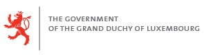
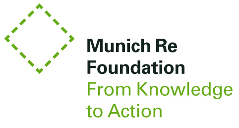
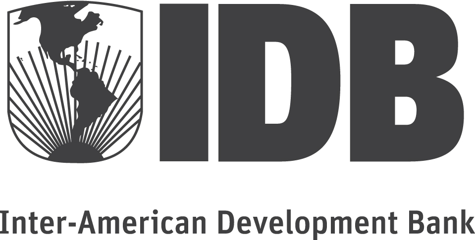
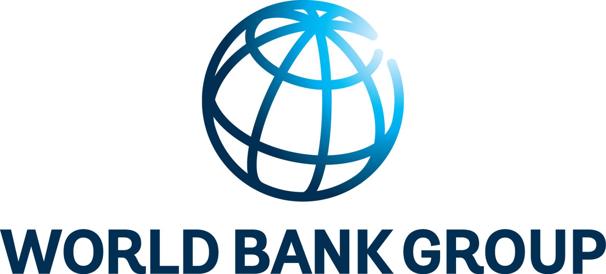
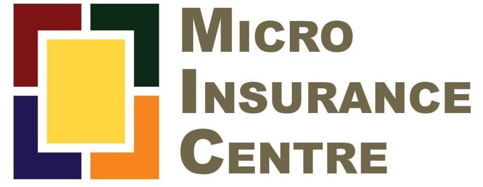

<div class="container">
  <div class="text-container col-sm-10 col-sm-offset-1">
    <h2>Partners of the World Map of Microinsurance (WMM)</h2>
    <p><a href="http://www.luxembourg.public.lu/en/" target="_blank"></a></p>
    <p><a href="http://www.munichre-foundation.org/home.html" target="_blank"></a></p>
    <br>
    <h3>Regional sponsors for the landscape study of Latin America and the Caribbean 2014</h3>
    <br>
    <p><a href="http://www.bradescoseguros.com.br/" target="_blank"></a></p>
    <p><a href="http://www.cnseg.org.br/cnseg/home.html" target="_blank"></a></p>
    <p><a href="http://www.iadb.org/en/inter-american-development-bank,2837.html" target="_blank"></a></p>
    <p><a href="http://www.iadb.org/en/resources-for-businesses/multilateral-investment-fund,5763.html" target="_blank"></a></p>
  	<p><a href="http://www.worldbank.org/" target="_blank"></a></p>
    <br>
    <h3>Landscape studies 2014-2016 conducted by</h3>
    <br>
    <p><a href="http://www.microinsurancecentre.org/" target="_blank"></a></p>
  </div>
</div><!-- /.navbar-collapse -->